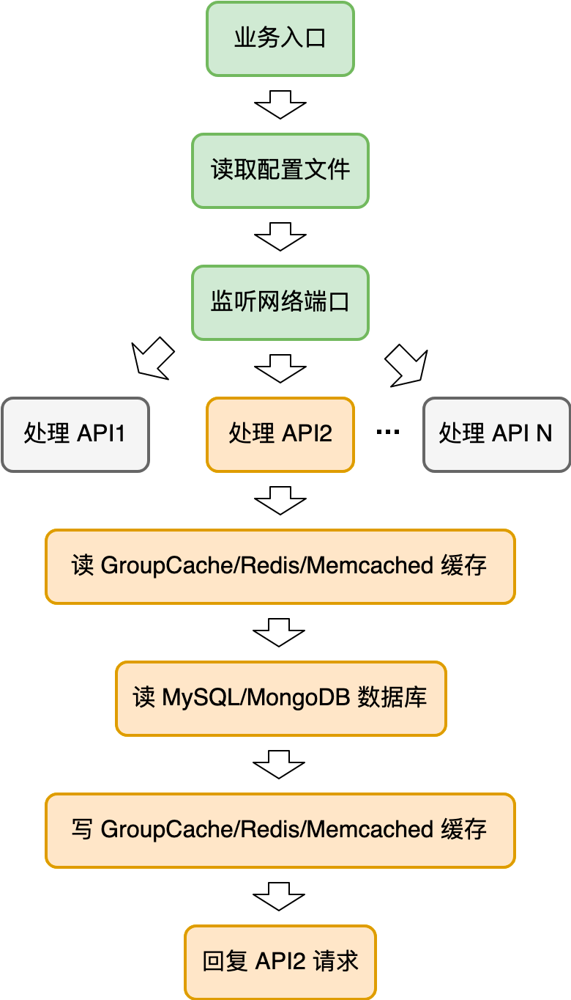
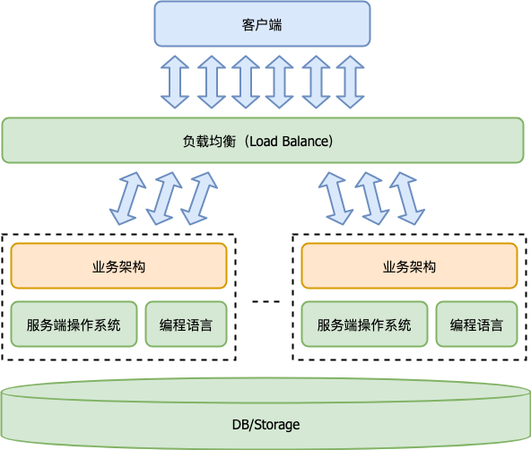
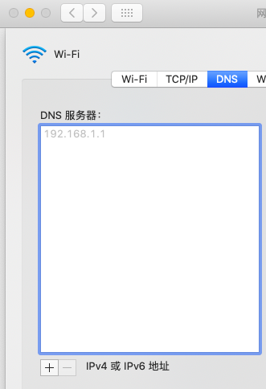

- 00 开篇词 怎样成长为优秀的软件架构师？.md.html
- 01 架构设计的宏观视角.md.html
- 02 大厦基石：无生有，有生万物.md.html
- 03 汇编：编程语言的诞生.md.html
- 04 编程语言的进化.md.html
- 05 思考题解读：如何实现可自我迭代的计算机？.md.html
- 06 操作系统进场.md.html
- 07 软件运行机制及内存管理.md.html
- 08 操作系统内核与编程接口.md.html
- 09 外存管理与文件系统.md.html
- 10 输入和输出设备：交互的演进.md.html
- 11 多任务：进程、线程与协程.md.html
- 12 进程内协同：同步、互斥与通讯.md.html
- 13 进程间的同步互斥、资源共享与通讯.md.html
- 14 IP 网络：连接世界的桥梁.md.html
- 15 可编程的互联网世界.md.html
- 16 安全管理：数字世界的守护.md.html
- 17 架构：需求分析 (上).md.html
- 18 架构：需求分析 (下) · 实战案例.md.html
- 19 基础平台篇：回顾与总结.md.html
- 20 桌面开发的宏观视角.md.html
- 21 图形界面程序的框架.md.html
- 22 桌面程序的架构建议.md.html
- 23 Web开发：浏览器、小程序与PWA.md.html
- 24 跨平台与 Web 开发的建议.md.html
- 25 桌面开发的未来.md.html
- 26 实战（一）：怎么设计一个“画图”程序？.md.html
- 27 实战（二）：怎么设计一个“画图”程序？.md.html
- 28 实战（三）：怎么设计一个“画图”程序？.md.html
- 29 实战（四）：怎么设计一个“画图”程序？.md.html
- 30 实战（五）：怎么设计一个“画图”程序？.md.html
- 31 辅助界面元素的架构设计.md.html
- 32 架构：系统的概要设计.md.html
- 33 桌面开发篇：回顾与总结.md.html
- 34 服务端开发的宏观视角.md.html
- 35 流量调度与负载均衡.md.html
- 36 业务状态与存储中间件.md.html
- 37 键值存储与数据库.md.html
- 38 文件系统与对象存储.md.html
- 39 存储与缓存.md.html
- 40 服务端的业务架构建议.md.html
- 41 实战（一）：“画图”程序后端实战.md.html
- 42 实战（二）：“画图”程序后端实战.md.html
- 43 实战（三）：“画图”程序后端实战.md.html
- 44 实战（四）：“画图”程序后端实战.md.html
- 45 架构：怎么做详细设计？.md.html
- 46 服务端开发篇：回顾与总结.md.html
- 47 服务治理的宏观视角.md.html
- 48 事务与工程：什么是工程师思维？.md.html
- 49 发布、升级与版本管理.md.html
- 50 日志、监控与报警.md.html
- 51 故障域与故障预案.md.html
- 52 故障排查与根因分析.md.html
- 53 过载保护与容量规划.md.html
- 54 业务的可支持性与持续运营.md.html
- 55 云计算、容器革命与服务端的未来.md.html
- 56 服务治理篇：回顾与总结.md.html
- 57 心性：架构师的修炼之道.md.html
- 58 如何判断架构设计的优劣？.md.html
- 59 少谈点框架，多谈点业务.md.html
- 60 架构分解：边界，不断重新审视边界.md.html
- 61 全局性功能的架构设计.md.html
- 62 重新认识开闭原则 (OCP).md.html
- 63 接口设计的准则.md.html
- 64 不断完善的架构范式.md.html
- 65 架构范式：文本处理.md.html
- 66 架构老化与重构.md.html
- 67 架构思维篇：回顾与总结.md.html
- 68 软件工程的宏观视角.md.html
- 69 团队的共识管理.md.html
- 70 怎么写设计文档？.md.html
- 71 如何阅读别人的代码？.md.html
- 72 发布单元与版本管理.md.html
- 73 软件质量管理：单元测试、持续构建与发布.md.html
- 74 开源、云服务与外包管理.md.html
- 75 软件版本迭代的规划.md.html
- 76 软件工程的未来.md.html
- 77 软件工程篇：回顾与总结.md.html
- 加餐 如何做HTTP服务的测试？.md.html
- 加餐 实战：“画图程序” 的整体架构.md.html
- 加餐 怎么保障发布的效率与质量？.md.html
- 热点观察 我看Facebook发币（上）：区块链、比特币与Libra币.md.html
- 热点观察 我看Facebook发币（下）：深入浅出理解 Libra 币.md.html
- 用户故事 站在更高的视角看架构.md.html
- 答疑解惑 想当架构师，我需要成为“全才”吗？.md.html
- 结束语 放下技术人的身段，用极限思维提升架构能力.md.html
- 课外阅读 从《孙子兵法》看底层的自然法则.md.html
- 捐赠
51 故障域与故障预案
51 | 故障域与故障预案你好，我是七牛云许式伟。
我们前面介绍了服务的发布和监控，来保障线上业务的持续服务。但是，不管我们怎么小心谨慎，故障仍然会不可避免地发生。并不是所有的故障都会影响到用户，一些局部的故障如果处理得当，对用户并不产生可见的影响。
今天我们就聊聊故障产生的原因与对策。可以导致故障的因素非常多。在 “[47 | 服务治理的宏观视角]” 一讲中，我们大体将故障类型分为以下几种。
- 软硬件升级与各类配置变更，即发布。
- 软硬件环境的故障。
- 终端用户的请求。比较典型的场景是秒杀类，短时间内大量的用户涌入，导致系统的承载能力超过规划，产生服务的过载。当然还有一些场景，比如有针对性的恶意攻击、特定类型的用户请求导致的服务端资源大量消耗等，都可能引发服务故障。
我们先来看看 “软硬件升级与各类配置变更”，也就是发布。发布过程引发的故障实际上有别于另外两种故障类型，它源于我们主动对系统作出变更，属于过程型的故障。
变更是故障的第一大问题源头。所以我们在发布的过程中多谨慎都不为过。不过我们今天的主题并不是以此类故障为主，我们已经在 “[加餐 | 怎么保障发布的效率与质量？]” 一讲中专门探讨了发布的过程管理应该怎么做。
大部分情况下，变更导致的故障在短期内就会得以暴露，这也是我们采用灰度发布这样的手段能够达到规避故障风险的原因。但当我们讨论故障域的时候，我们还是应该意识到，灰度并不能发现所有变更风险。有时代码变更引发的故障需要达到特定的条件下才得以触发，例如数据库规模达到某个临界点可能导致数据库操作异常。
这类有很长潜伏期的故障风险，是非常令人头疼的。一方面它爆发时点与风险产生的时点间隔太远，不容易定位。另一方面，有可能对有状态的服务而言，它发作起来就已经是不可控制的灾难。怎么才能避免这类问题？严谨的白盒代码审查和全面的测试覆盖率提升，才有可能消除此类风险，至少理论上是这样。
软硬件环境的故障
今天我们重点讨论的是 “软硬件环境的故障” 引发的服务异常。我们追求的是 24 小时不间断服务，所以站在更长的时间维度，或者更大的集群规模维度看，可以预期软硬件环境的故障是一种必然。
仍然拿我之前举的例子来说，假设一块硬盘的平均寿命是 3 年，也就是说大约 1000 天会出现一次坏盘。但是如果我们集群有 1000 块硬盘，那么平均每天就会坏 1 块盘。故障从偶然就变成了必然。
怎么为 “软硬件环境的故障” 做好故障预案？常见做法无非两种：要么用 SRE 的手段，通过监控系统发现特定的软硬件故障并进行报警，收到报警后并不是通知到人，而是触发去自动执行故障恢复的脚本。另一种做法是干脆把故障恢复的逻辑实现在业务服务的代码逻辑中，避免因软硬件故障而出现单点问题。
这两种方法本质上是相同的，只不过是选择的技术手段有所差别。无论通过哪种方式，要想找到所有可能的故障点，我们就需要对服务所有请求的路径进行分析。要正确画出请求链路，需要了解以下两个方面。其一，对我们所依赖的基础架构要了解，否则我们不知道请求是如何到达我们的业务服务器的。其二，要对我们服务的业务架构了解，知道请求的逻辑是怎么样的。当然对业务架构不甚了解问题不大，代码就在那里，我们可以看着一行行代码，把请求的链路忠实画出来。
如何通过源代码来看请求链路？
首先，IO 之外的普通业务代码是不太会出问题的。要出问题也是业务逻辑错误的问题，这类故障我们并不归类到 “软硬件环境的故障” ，而是 “软硬件升级与各类配置变更”。这个话题我们前面已经聊过，不再展开。
IO 代码包括哪些？常见的是磁盘 IO 和 网络 IO。当然完整来说，所有外部设备的操作都算，只不过我们极少会碰到。
考虑到代码的分支结构，我们的请求链路可以画出一棵树，树的每个节点是一次 IO 操作。一个示意性的请求链路图如下：

表面上看起来，这里每一个 IO 请求，我们都应该考虑万一失败了我应该怎么处理，以确保用户的 API 请求都被正确地处理。但实际写业务代码的时候，我们大部分情况下是比较心宽的，并不会处处小心翼翼去做异常的恢复。这里面的原因是因为前端有负载均衡。
下面这个图你很熟悉了，它是服务端程序的宏观体系架构图。

有了负载均衡，实现业务架构的心智负担小了很多。遇到任何异常，我们返回 5XX 错误的请求结果，这时负载均衡发现请求出错了，就会把该请求发给其他的业务服务器来重试。这就解决了业务架构的单点问题。
不同服务的 API 请求链路会有所差异。但是大体来说，一个经典的 API 请求，如果我们把所有基础架构也考虑在内的话，它的故障点主要有：
- 网络链路，包括用户端网络和服务端网络；
- DNS；
- 机房；
- 机架；
- 交换机；
- 负载均衡；
- 物理服务器；
- 业务服务本身；
- 缓存/数据库/存储。
我们一一进行分析。
先看网络链路，它包括用户端网络和服务端网络。
如果是用户个人的网络出问题，就没法正常为这个用户服务了，但是从服务提供方来说，只要这个用户不是超级 VIP 用户，他的损失并不大，一般不会为他做太多的事情。
但如果不是个例用户问题，而是某个地区的运营商网络出问题了，那么对业务可能就造成了较大程度的影响。只是对于大部分业务服务提供方来说，他自身并没有太大的实力去解决它。但我们如果开放性考虑这个问题的话，这个问题也并不完全是无解，今天暂且不提。
只要用户端网络没问题，它连接到服务端网络就非常可控了。整个网络链路非常复杂，它是一个有向图。为了确保网络请求的通畅，服务端网络链路会准备多个，这时我们通常用多个服务的域名，每个域名代表一个网络链路，由客户端进行链路的选择与重试。
当然如果我们的服务是单机房的，那么它和用户端网络一样，也会有网络链路的单点故障。如果投入产出比可以的话，我们往往会做多机房的容灾。这一点我们分析机房级别的故障再展开。
我们再看 DNS，它负责的是将域名解析为 IP。DNS 服务分 DNS 权威服务器和 DNS 递归或转发服务器。DNS 权威服务器是域名解析服务的真正提供方，而 DNS 递归/转发服务器是域名解析的缓存。
DNS 权威服务怎么防止单点？提供多个就好。域名服务商通常允许我们为该域名配置多个 DNS 权威服务，比如 ns1.example.com 和 ns2.exmaple.com。这两个或多个 DNS 权威服务器最好不要在同一个机房，这样才可以达到容灾的目的。
DNS 递归/转发服务分用户侧与服务侧。用户侧来说，只要用户请求我们的服务，第一步就需要把我们服务的域名解析为 IP，就需要请求 DNS 递归/转发服务。除了用系统默认的之外，也有一些公共的 DNS 递归服务，比如 Google 提供了 8.8.8.8 和 4.4.4.4。
一般操作系统都允许用户自行设置 DNS 服务器，它可以是多个 DNS 递归或转发服务器。比如在 MAC 下的配置界面如下图。

服务端侧也其实是一样的，只不过它对 DNS 服务器的需要来源于业务服务向外部发起请求的场景，比如我的业务服务是个爬虫，它需要去抓网页，或者其他原因需要请求某种公网的服务。
但服务端侧的解决方案和用户侧差别比较大，我们很少会配置 8.8.8.8 和 4.4.4.4 这类公共的 DNS 递归服务器，而是自己在机房中搭建一组高可用的 DNS 服务器。同样地，我们可以通过给操作系统配置多个 DNS 服务器来达到避免单点故障的目的。
聊完 DNS，我们来看下机房。机房级别故障可以有多方面的原因，比如机房断电、断网。为了防止机房故障造成服务中断，我们就需要做多机房容灾。
如果我们的服务偏静态，也就是写很少，大部分情况下都是读操作，那么可以用 2AZ 架构（双机房容灾）。但是在大部分通用的业务场景下，我们建议 3AZ 架构（三个机房容灾）。
在整体业务的体量足够大的情况下，3AZ 不一定会比 2AZ 成本高。因为 2AZ 我们每个 AZ（可用区）的容量规划，必须得能够支撑全部的业务体量，否则不足以支撑某个 AZ 挂掉。而 3AZ 我们可以让每个 AZ 的容量只是全部业务体量的 1/2。这样我们总成本只花了 1.5 倍，而不是 2 倍。
任何容灾其实最麻烦的都是数据库和存储，也就是业务状态是如何容灾的。从数据库的主从的选举角度来说，3AZ 也比 2AZ 好。因为 2AZ 的话，一个 AZ 下线就意味着数据库有一半节点下线，这时候就没法选举出新的主（Master）节点。
机房故障会导致一批 IP 下线。这时我们就需要在 DNS 解析中把这批 IP 下线。但是 DNS 解析的调整生效周期比较长，具体时间与 DNS 条目设置的 TTL 相关，比如 1 小时。但有的 DNS 递归/转发服务器会忽略 TTL，这就导致 DNS 解析生效时间变得更加不确定。
要解决这个问题，通常的做法是在客户端引入 HTTP DNS 支持。顾名思义，HTTP DNS 基于 HTTP 协议来提供 DNS 解析服务，绕过了传统的 DNS。结合客户端自身适当做下的 DNS 缓存，就可以解决掉 DNS 解析生效不及时的问题。
接下来聊聊机架故障。它和机房故障类似，整排机架的机器都同时断电或断网。为了避免机架故障导致的负面影响，我们一般在服务编排时会考虑两点：
- 同类服务尽可能分散到不同的机架上，避免因为机架故障导致某个服务整体下线。
- 同一份数据的多个副本，或者同一 EC 条带的不同数据块，尽可能分散在不同的机架上，避免因为机架故障导致该数据不可访问。
聊完了机架，我们接着聊交换机。为了避免交换机故障导致大范围的机器下线，我们用两个交换机进行相互热备，这通过交换机之间的 “热备份路由协议”（Hot Stand by Router Protocol，简称 HSRP）进行。
下一个故障点是负载均衡。负载均衡的任何一个实例发生故障，意味着我们业务的入口发生故障。比如，假设我们负载均衡集群有 N 个实例，其中某个实例发生了故障，就意味着有 1/N 比例的用户受到了影响。这通常是不可接受的。
你可能会想到说，我把故障的负载均衡实例的 IP 从 DNS 解析中去除，就可以消除掉这个故障。这理论上可行，但是我们实际很少会这么做，原因和前面说的 DNS 解析的生效时间过长有关。我们不能够接受长达 1 小时的入口级故障。
比较好的做法是，所有负载均衡实例的 IP 是 VIP，即基于虚 IP 技术。关于 VIP 技术的介绍，你可以回顾一下 “[35 | 流量调度与负载均衡]”。一旦检测到 VIP 对应的主实例故障，我们就通过 VIP 技术把它的流量打到其他负载均衡实例上，这样就避免了因为负载均衡实例故障导致的损失。
下一个故障点是业务服务本身。这块相对容易。只要我们坚持业务服务器 “无状态”，那么任何一个业务服务器故障，都不会对用户产生实际的影响。这也是强大的基础架构带来的好处，它让我们做业务更轻松了。
这个架构课开课以来，看到一些人反馈说不太理解为什么从计算机底层原理开始谈起，好像和常规的架构课很不一样。事实上关于这一点我在开篇第0讲就解释过理由，今天我在这里重申一下：
- 首先，基础架构是业务架构的一部分。不了解基础架构，你就不知道自己写的软件背后都发生了什么，你就无法掌控全局，这对你思考架构演进会有很大的局限性，因为你是 “戴着脚镣跳舞”。
- 其次，基础架构是最宏大的架构实践案例，需要我们好好感悟。我们不只是要知道基础架构怎么用，还应该理解它为何演变成今天这样。对于优雅的基础架构设计，我们应该要有强烈的共鸣，惊喜赞叹。如果你没有感觉，说明你对架构思维也还没有感觉，也就更不可能构建出极致的架构。
- 最后，在后面总结架构思维的时候，我们会以大家耳熟能详的基础架构作为例子，这一定程度会更加深入人心。当然，具体业务实战方面的案例也必不可少，我们会结合两者一起谈。
最后我们聊聊缓存、数据库和存储。这些服务有一个共同特征，它们都是有状态的服务。
缓存集群通常是单副本的，通过特定的分片算法，比如一致性哈希，来定位具体的缓存实例。
部分缓存实例挂掉，一般来说带来的冲击并不大，基本也就是缓存命中率瞬间有个下降，然后逐步回升。但是如果缓存实例挂掉过多，甚至极端情况下全部挂掉的情况下，就会导致后端数据库的压力很大，出现延时变高，甚至出现雪崩现象。
对于数据库压力太大导致雪崩，数据库再起来就又立刻被打爆，怎么都起不来的情况，最好的做法是在数据库层面就做好过载保护。在数据库不支持自我保护的情况下，一个替代的做法是通过 SRE 的手段来实现：一旦监控系统发现数据库过载了，就选择由负载均衡来扔掉部分用户请求。
如果雪崩已经发生，常见的做法是让负载均衡先扔掉足够多的用户请求，让数据库能够正常服务用户。然后观察数据库的负载情况，逐步减少负载均衡扔掉的用户请求量，直至最后完全正常提供服务。
数据库和存储要保证高可靠（高持久性）和高可用，必然是多实例的。无论是什么架构，对于特定的数据，这些实例有主（Master）有从（Slave），一旦主节点挂掉就会触发选举确定新的主。当然有一些老的数据库是基于一主一备，备节点 Stand-by 直到主节点挂掉时接替它继续工作。但是这种模式已经太过时了，并不推荐使用。
故障恢复
清楚了所有的故障点，我们就可以针对性去做故障预案。对于大部分的故障来说，我们会优先倾向于通过切流量来消除故障。
流量切换，需要遵循最小切量原则。能够通过更细粒度的切量动作来消除故障，就应该用细粒度的。
通过以上分析，我们可以看出流量切换的控制点有这样几个：
- 负载均衡；
- 负载均衡实例的 VIP 入口；
- DNS 解析。
但是故障根因如果是有状态服务，比如数据库与存储，那么我们就很难通过切量来消除故障。这时我们应该用过载保护机制来对服务进行降级，也就是在特定环节把一定比例的用户请求扔掉。
扩容也是解决数据库与存储集群压力大的常规思路，这块我们后面再详细展开。
结语
今天我们就聊聊故障产生的原因与对策。可以导致故障的因素非常多，我们大体分为以下几种。
- 软硬件升级与各类配置变更，即发布。
- 软硬件环境的故障。
- 终端用户的请求。
今天我们重点讨论的是 “软硬件环境的故障” 引发的服务异常及其故障预案。我们追求的是 24 小时不间断服务，所以站在更长的时间维度，或者更大的集群规模维度看，可以预期软硬件环境的故障是一种必然。
如果你对今天的内容有什么思考与解读，欢迎给我留言，我们一起讨论。下一讲我们聊聊 “故障排查与根因分析”。
如果你觉得有所收获，也欢迎把文章分享给你的朋友。感谢你的收听，我们下期再见。
© 2019 - 2023 Liangliang Lee. Powered by gin and hexo-theme-book.